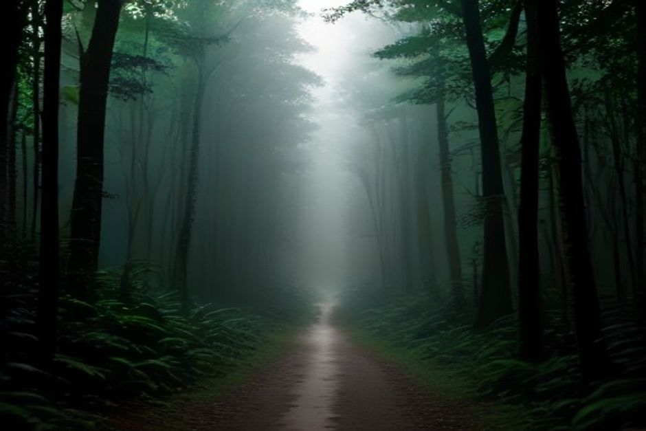
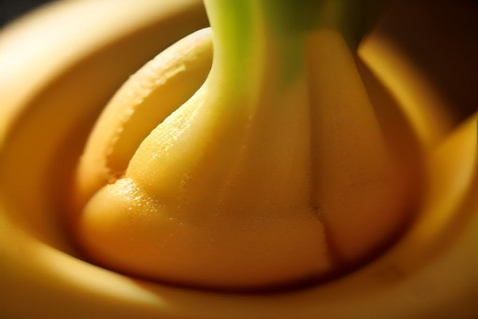

Sail the south coast from Funchal and you'll pass them stacked up the cliffs long before you notice: terrace after terrace of banana palms, wedged onto slopes too steep for almost anything else. Here's what makes Madeira's banana genuinely different, where it's grown, and where to actually taste one.
What makes Madeira bananas different from a regular banana?
Madeira bananas are smaller, denser and noticeably sweeter than the large Cavendish bananas that fill most European supermarkets. The variety grown here — sold under the name Banana da Madeira — has a thinner skin, a creamier texture and a more concentrated aroma, the result of volcanic soil, a mild subtropical microclimate and terraces that get full sun exposure off the Atlantic. Growers also pick and handle the fruit largely by hand on plots too small and too steep for mechanisation, which keeps quality high but yields modest compared with industrial plantations elsewhere.

Where are Madeira's banana plantations?
Almost all of them sit on the south coast, in a band running from Câmara de Lobos through Ribeira Brava, Ponta do Sol and Madalena do Mar to Calheta — the warmest, driest side of the island, sheltered from the wetter north. Terraces climb from near sea level up to roughly 300 metres, cut into the hillsides and irrigated by the same network of levada channels that also waters the island's vineyards and vegetable plots. It's slow, physically demanding farming: many growers still work plots of under a hectare, often as a second job alongside other work.
Is "Banana da Madeira" a protected product?
Yes. Banana da Madeira carries Protected Geographical Indication (PGI) status within the EU, meaning only fruit grown, harvested and handled to defined standards within the designated parishes of Madeira can legally use the name. The designation exists precisely because the island's banana is a distinct product from imported tropical fruit — smaller, sweeter, and tied to a specific place and growing method rather than a generic commodity crop.
How much of the harvest gets exported?
Madeira has roughly 9,000 hectares under banana cultivation and around 3,000 registered growers, and the large majority of what's picked leaves the island. Most of the crop is shipped to mainland Portugal, where Banana da Madeira is sold as a premium, recognisably local alternative to imported bananas from further afield. What stays on the island turns up at markets, roadside stalls and on restaurant menus — a much smaller slice of a crop that's really grown for export.
Where can you buy or try Madeira bananas?
The Mercado dos Lavradores in Funchal is the easiest place to see and buy them, stacked in small hands alongside custard apples, passion fruit and other produce from the same south coast terraces. Along the ER101 coastal road you'll also pass honesty-box stalls run directly by growers — a few euros in a tin for a bag straight off the plant. In restaurants, look for fried banana served alongside espetada (the beef skewer is almost always plated with it), or bolo de banana, a dense banana cake sold in local bakeries.
Can you see the banana terraces from the water?
Yes, and it's one of the better ways to actually understand the scale of the crop. Running the coast between Câmara de Lobos and Ribeira Brava, the banana terraces stack up the hillside in tight green ribbons, wedged between the road and the cliff edge — a view that's hard to get properly from land, where trees and buildings block the angle. It's part of the same stretch of coast that Chifbay's private day trip from Marina do Funchal runs, alongside Cabo Girão and the swim stop at Fajã dos Padres.
What's the best way to eat a Madeira banana?
Fully ripe and fresh, ideally bought the same day — the smaller size means they turn from firm to overripe faster than imported bananas, so locals buy little and often rather than stockpiling a bunch. Beyond eating it plain, the two classic local uses are fried banana as an espetada side and bolo de banana for dessert; a banana liqueur also shows up as a souvenir in Funchal's gift shops, though it's sweeter novelty than serious drink.

Small, steep and hand-picked — the banana terraces are as much a part of Madeira's south coast as the cliffs above them.
Next time you're tracing the coastline south of Funchal, by road or by boat, look up at the terraces rather than past them. It's one of the quieter working landscapes on the island — and one you'll taste before you leave.